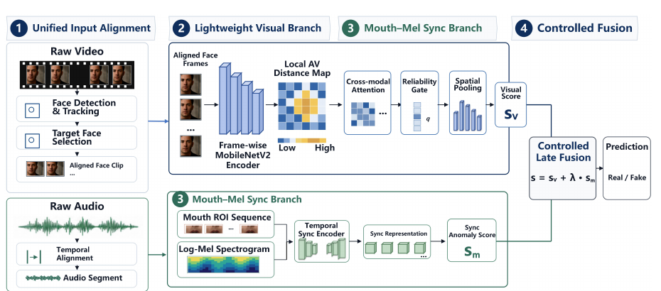
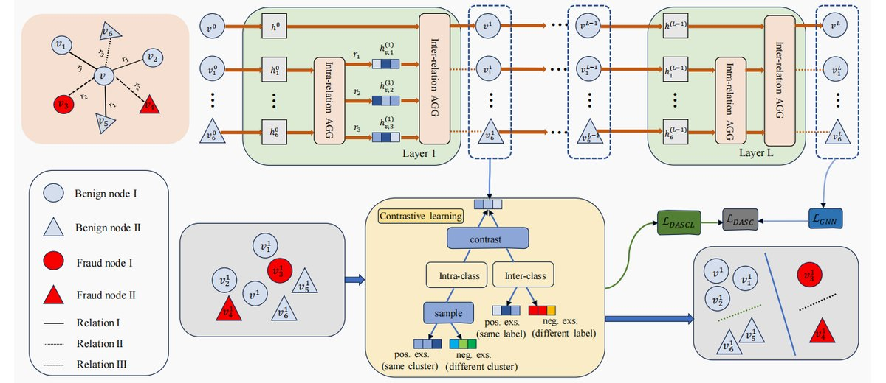
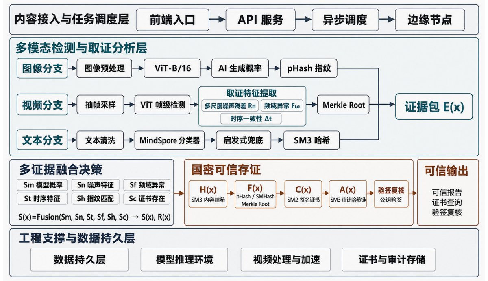

01 IN PROGRESSRESEARCH / AUDIO-VISUAL AI
LAVID
让轻量模型真正使用音频，而不只是依赖视觉捷径。
- PyTorch
- MobileNetV2
- Sync Learning
大模型与自然语言处理 · 研究者 / 构建者
从模型复现到方法创新，再到可信系统工程。每一个项目都从一个具体问题开始。

01 IN PROGRESSRESEARCH / AUDIO-VISUAL AI
让轻量模型真正使用音频，而不只是依赖视觉捷径。

02 IEEE TDSC / REVIEWRESEARCH / GRAPH AI
识别同时进行特征伪装与关系伪装的欺诈节点。

03 SYSTEM DESIGNENGINEERING / TRUSTWORTHY AI
把 AIGC 检测做成可验证、可追踪的完整系统。
我更关心：模型为什么有效、是否真的使用了预期模态、在资源受限场景里能否部署，以及结果能否被验证与追踪。
目前就读于哈尔滨工业大学（威海）计算机科学与技术专业，已保研至哈尔滨工业大学，师从 车万翔教授。我已进入哈工大赛尔实验室，研究大模型与自然语言处理；未来将到中国移动九天研究院从事结构化大模型研究。
TOOLKIT / METHODS
计算机科学与技术本科 · 专业排名 39 / 414
完成音视频一致性检测复现，进一步探索轻量化与音频贡献验证。
参与图欺诈检测论文研究，同时搭建多模态内容安全可信系统。
师从 车万翔教授，进入哈工大赛尔实验室，研究大模型与自然语言处理。
将从事结构化大模型研究，继续推进大模型方向的研究与实践。
有一个值得一起研究的问题？